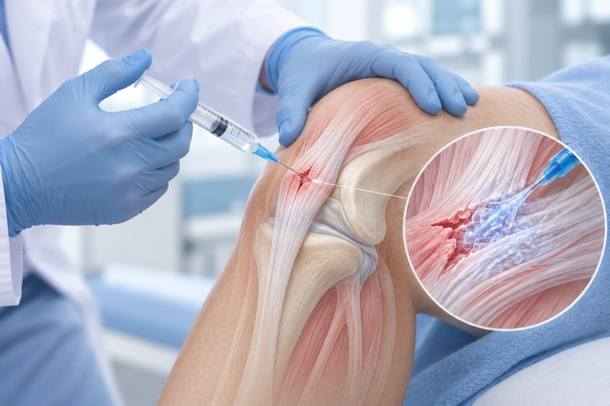

콜라겐 주사 치료란?
힘줄을 구성하는 주요 성분인 콜라겐을 손상 부위에 주입하는 치료입니다.
손상의 위치와 정도, 사용 제제의 특성을 확인하여 적용 여부를 결정하며 모든 파열에 적합한 것은 아닙니다.
콜라겐 성분을 손상된 힘줄 부위에 주입하여
조직의 회복을 돕는 치료입니다.

힘줄을 구성하는 주요 성분인 콜라겐을 손상 부위에 주입하는 치료입니다.
손상의 위치와 정도, 사용 제제의 특성을 확인하여 적용 여부를 결정하며 모든 파열에 적합한 것은 아닙니다.

힘줄의 손상 범위와 통증 원인을 함께 확인합니다.
검사 결과에 따라 주입 부위와 치료 계획을 정하고 회복 단계에 맞는 운동과 재활을 안내합니다.
진찰과 영상검사로 힘줄의 손상 위치와 범위, 주변 조직의 상태를 확인합니다.
제제의 특성을 확인하고 초음파로 위치를 살피며 계획한 부위에 주입합니다.
통증과 움직임의 변화를 확인하면서 운동 강도와 재활 계획을 조절합니다.
힘줄의 손상 정도와 기존 염증을 살펴봅니다.
사용 제제와 주입 방법에 따라 치료 계획이 달라집니다.
주입 부위의 무리한 동작은 줄이고 안내받은 운동을 단계적으로 하세요.
붓기·열감 악화 또는 심한 통증 지속 시 진료받으세요.